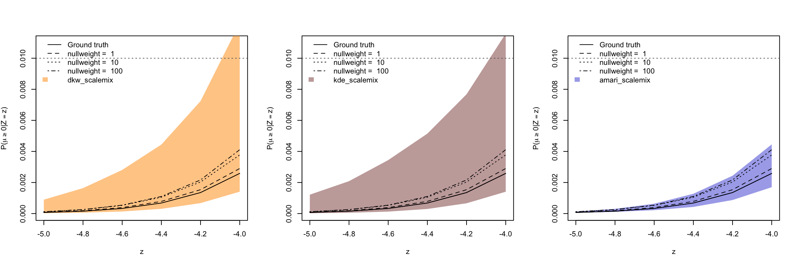

Last updated: 2022-02-02
Checks: 7 0
Knit directory: maskedmash/
This reproducible R Markdown analysis was created with workflowr (version 1.6.2). The Checks tab describes the reproducibility checks that were applied when the results were created. The Past versions tab lists the development history.
Great! Since the R Markdown file has been committed to the Git repository, you know the exact version of the code that produced these results.
Great job! The global environment was empty. Objects defined in the global environment can affect the analysis in your R Markdown file in unknown ways. For reproduciblity it’s best to always run the code in an empty environment.
The command set.seed(20210205) was run prior to running the code in the R Markdown file. Setting a seed ensures that any results that rely on randomness, e.g. subsampling or permutations, are reproducible.
Great job! Recording the operating system, R version, and package versions is critical for reproducibility.
Nice! There were no cached chunks for this analysis, so you can be confident that you successfully produced the results during this run.
Great job! Using relative paths to the files within your workflowr project makes it easier to run your code on other machines.
Great! You are using Git for version control. Tracking code development and connecting the code version to the results is critical for reproducibility.
The results in this page were generated with repository version f330896. See the Past versions tab to see a history of the changes made to the R Markdown and HTML files.
Note that you need to be careful to ensure that all relevant files for the analysis have been committed to Git prior to generating the results (you can use wflow_publish or wflow_git_commit). workflowr only checks the R Markdown file, but you know if there are other scripts or data files that it depends on. Below is the status of the Git repository when the results were generated:
Ignored files:
Ignored: .DS_Store
Ignored: .Rhistory
Ignored: .Rproj.user/
Ignored: code/.DS_Store
Ignored: code/mashr/src/Makevars
Ignored: code/mashr/src/RcppExports.o
Ignored: code/mashr/src/extreme_deconvolution.o
Ignored: code/mashr/src/mash.o
Ignored: code/mashr/src/mashr.so
Ignored: output/.DS_Store
Untracked files:
Untracked: ExDeconDemo_c.log
Untracked: ExDeconDemo_loglike.log
Untracked: analysis/ash0_decay_weight.Rmd
Untracked: analysis/ash_decay_weight.Rmd
Untracked: analysis/ebci_ash_point_mass.Rmd
Untracked: analysis/ebci_point_mass.Rmd
Untracked: analysis/ebci_with_without_point_mass.Rmd
Untracked: analysis/lfsr_median.Rmd
Untracked: analysis/lfsr_rank.Rmd
Untracked: analysis/mashdiagnostics.Rmd
Untracked: code/proposal.R
Untracked: code/simulation/lfsr_rank.R
Untracked: output/ebci/
Untracked: output/lfsrRank/
Untracked: output/maskedmashFDR/
Unstaged changes:
Modified: analysis/check_mash_fsr.Rmd
Modified: analysis/estimatePrior.Rmd
Modified: analysis/index.Rmd
Modified: analysis/maskedmashFDR.Rmd
Modified: code/maskedmashr/mashFDR.R
Modified: code/maskedmashr/mash_wrapper.R
Modified: code/maskedmashr/simDataI_ult.R
Modified: code/simulation/check_mash_lfsr.R
Note that any generated files, e.g. HTML, png, CSS, etc., are not included in this status report because it is ok for generated content to have uncommitted changes.
These are the previous versions of the repository in which changes were made to the R Markdown (analysis/ebci.Rmd) and HTML (docs/ebci.html) files. If you’ve configured a remote Git repository (see ?wflow_git_remote), click on the hyperlinks in the table below to view the files as they were in that past version.
| File | Version | Author | Date | Message |
|---|---|---|---|---|
| Rmd | f330896 | Dongyue Xie | 2022-02-02 | wflow_publish(c(“analysis/nebci.Rmd”, “analysis/ebci.Rmd”, “analysis/ebci_5reps.Rmd”, |
In this simulation, we examine the EBCI method proposed by Ignatiadis and Wager(2021). And compare the results with ash.
The simulation setting is: at each of \(nreps=100\) repetitions, \(n=5000\) samples \(z_i\) are generate from the distribution \(z_i|\mu_i\sim N(\mu_i,1), \mu_i\sim g(\cdot)\), where the prior \(g\) is referred to as spiky,\[g^{spiky} = 0.4N(0,0.25^2)+0.2N(0,0.5^2)+0.2N(0,1)+0.2N(0,2^2).\]
Given a class of non-parametric priors, specifically, Gaussian location mixture and Gaussian scale mixture priors, the prior \(g\) is estimated based on \(5000\) samples. Then we obtain the \(\widehat {lfsr}(z)\)(for simplicity, \(p(\mu\geq 0|Z=z)\)) at a grid of target \(z\) values, \(-5:0.2:5\). At each repetition, we get the lower and upper bound of the confidence interval, as well as the true lfsr based on true \(g\). The final plot is based the average of them over all repetitions.
The EBCI package Empirikos is implemented in Julia, here I saved the output as a CSV file and imported here.
ebci = read.csv('output/ebci/lfsr_no_point_mass/spiky_lfsr.csv')
head(ebci) t method ground_truth_mean lower_mean upper_mean
1 -5.0 dkw_scalemix 6.906326e-05 2.217929e-05 0.0008968021
2 -4.8 dkw_scalemix 1.533764e-04 5.684814e-05 0.0016371553
3 -4.6 dkw_scalemix 3.287580e-04 1.331955e-04 0.0028092570
4 -4.4 dkw_scalemix 6.794296e-04 3.049399e-04 0.0044429886
5 -4.2 dkw_scalemix 1.352088e-03 6.720071e-04 0.0072411309
6 -4.0 dkw_scalemix 2.586960e-03 1.408299e-03 0.0122701579unique(ebci$method)[1] "dkw_scalemix" "kde_scalemix" "amari_scalemix" "dkw_locmix"
[5] "kde_locmix" "amari_locmix" Load ash results. For code running ash experiments, see the appendix.
ash_res = readRDS('output/ebci/ash_lfsr_no_point_mass.rds')
ash_posprob_mean = apply(ash_res$PosProb,3,colMeans)
colnames(ash_posprob_mean) = ash_res$nullweightsWe first look at using Gaussian scale mixture as the prior.
The prior class is \(g\in SN(0.1,15.6,1.1)\).
#t, method, ground_truth_mean, lower_mean, upper_mean
# "dkw_scalemix" "kde_scalemix" "amari_scalemix" "dkw_locmix" "kde_locmix" "amari_locmix"
target = seq(-5,0,by = 0.2)
method_list = c("dkw_scalemix","kde_scalemix","amari_scalemix")
plot_res = function(method,color,idx,ylim=c(0,1)){
out = ebci[ebci$method == method,]
plot(out$t[idx],out$ground_truth_mean[idx],type='l',xlab='z',ylab=expression(paste('P(',mu>=0,'|',Z==z,')')),
ylim=ylim)
#axis(1,at=seq(-5,5,by=1))
#axis(2,at=seq(0,1,by=0.1))
polygon(c(rev(out$t[idx]), out$t[idx]), c(rev(out$upper_mean[idx]), out$lower_mean[idx]), col=color, border = NA)
lines(out$t[idx],out$ground_truth_mean[idx])
#lines(out$t,out$lower_mean,lty=2)
#lines(out$t,out$upper_mean,lty=2)
for(j in 1:3){
lines(target[idx],ash_posprob_mean[idx,j],lty=j+1)
}
abline(h=0.01,lty=3,col='grey40')
abline(h=0.05,lty=3,col='grey40')
legend('topleft',c('Ground truth',paste('nullweight = ',ash_res$nullweights),method),
lty=c(1,2,3,4,NA),bty="n",
fill=c(rep(NA,4), color),
border = rep(NA,5),
x.intersp=c(rep(1,4),1))
}
#par(mfrow=c(1,3))
#plot_res(method = "dkw_scalemix",idx=1:51,color = rgb(1, 0.6, 0,0.5))
#plot_res(method = "kde_scalemix",idx=1:51,color = rgb(0.4, 0, 0,0.4))
#plot_res(method = "amari_scalemix",idx=1:51,color = rgb(0, 0, 0.8,0.4))Push z to left, up to -3.
par(mfrow=c(1,3))
plot_res(method = "dkw_scalemix",idx=1:11,color = rgb(1, 0.6, 0,0.5),ylim=c(0,0.08))
plot_res(method = "kde_scalemix",idx=1:11,color = rgb(0.4, 0, 0,0.4),ylim=c(0,0.08))
plot_res(method = "amari_scalemix",idx=1:11,color = rgb(0, 0, 0.8,0.4),ylim=c(0,0.08))Further push z to left, up to -4.
par(mfrow=c(1,3))
plot_res(method = "dkw_scalemix",idx=1:6,color = rgb(1, 0.6, 0,0.5),ylim=c(0,0.011))
plot_res(method = "kde_scalemix",idx=1:6,color = rgb(0.4, 0, 0,0.4),ylim=c(0,0.011))
plot_res(method = "amari_scalemix",idx=1:6,color = rgb(0, 0, 0.8,0.4),ylim=c(0,0.011))
Now let’s take a look at the location mixture prior class. The prior class is \(LN(0.25^2,[-6,6])\). ([-6:0.05:6])
Push z to left, up to -3.
par(mfrow=c(1,3))
plot_res(method = "dkw_locmix",idx=1:11,color = rgb(1, 0.6, 0,0.5),ylim=c(0,0.08))
plot_res(method = "kde_locmix",idx=1:11,color = rgb(0.4, 0, 0,0.4),ylim=c(0,0.08))
plot_res(method = "amari_locmix",idx=1:11,color = rgb(0, 0, 0.8,0.4),ylim=c(0,0.08))Further push z to left, up to -4.
par(mfrow=c(1,3))
plot_res(method = "dkw_locmix",idx=1:6,color = rgb(1, 0.6, 0,0.5),ylim=c(0,0.011))
plot_res(method = "kde_locmix",idx=1:6,color = rgb(0.4, 0, 0,0.4),ylim=c(0,0.011))
plot_res(method = "amari_locmix",idx=1:6,color = rgb(0, 0, 0.8,0.4),ylim=c(0,0.011))Overlay upper bound of scale and location mixture. And see how they diff.
par(mfrow=c(1,3))
idx = 1:26
scalemix = ebci[ebci$method == 'dkw_scalemix',]
locmix = ebci[ebci$method == 'dkw_locmix',]
plot(locmix$t[idx],locmix$ground_truth_mean[idx],type='l',xlab='z',ylab=expression(paste('P(',mu>=0,'|',Z==z,')')),
ylim=c(0,1))
lines(scalemix$t[idx],scalemix$upper_mean[idx],lty=2)
lines(locmix$t[idx],locmix$upper_mean[idx],lty=3)
legend('topleft',c('Ground truth','dkw_scalemix','dkw_locmix'),lty=c(1,2,3))
idx = 1:26
scalemix = ebci[ebci$method == 'kde_scalemix',]
locmix = ebci[ebci$method == 'kde_locmix',]
plot(locmix$t[idx],locmix$ground_truth_mean[idx],type='l',xlab='z',ylab=expression(paste('P(',mu>=0,'|',Z==z,')')),
ylim=c(0,1))
lines(scalemix$t[idx],scalemix$upper_mean[idx],lty=2)
lines(locmix$t[idx],locmix$upper_mean[idx],lty=3)
legend('topleft',c('Ground truth','kde_scalemix','kde_locmix'),lty=c(1,2,3))
idx = 1:26
scalemix = ebci[ebci$method == 'amari_scalemix',]
locmix = ebci[ebci$method == 'amari_locmix',]
plot(locmix$t[idx],locmix$ground_truth_mean[idx],type='l',xlab='z',ylab=expression(paste('P(',mu>=0,'|',Z==z,')')),
ylim=c(0,1))
lines(scalemix$t[idx],scalemix$upper_mean[idx],lty=2)
lines(locmix$t[idx],locmix$upper_mean[idx],lty=3)
legend('topleft',c('Ground truth','amari_scalemix','amari_locmix'),lty=c(1,2,3))Again, let’s zoom in the plot a little bit.
par(mfrow=c(1,3))
idx = 1:16
scalemix = ebci[ebci$method == 'dkw_scalemix',]
locmix = ebci[ebci$method == 'dkw_locmix',]
plot(locmix$t[idx],locmix$ground_truth_mean[idx],type='l',xlab='z',ylab=expression(paste('P(',mu>=0,'|',Z==z,')')),
ylim=c(0,1))
lines(scalemix$t[idx],scalemix$upper_mean[idx],lty=2)
lines(locmix$t[idx],locmix$upper_mean[idx],lty=3)
legend('topleft',c('Ground truth','dkw_scalemix','dkw_locmix'),lty=c(1,2,3))
idx = 1:16
scalemix = ebci[ebci$method == 'kde_scalemix',]
locmix = ebci[ebci$method == 'kde_locmix',]
plot(locmix$t[idx],locmix$ground_truth_mean[idx],type='l',xlab='z',ylab=expression(paste('P(',mu>=0,'|',Z==z,')')),
ylim=c(0,1))
lines(scalemix$t[idx],scalemix$upper_mean[idx],lty=2)
lines(locmix$t[idx],locmix$upper_mean[idx],lty=3)
legend('topleft',c('Ground truth','kde_scalemix','kde_locmix'),lty=c(1,2,3))
idx = 1:16
scalemix = ebci[ebci$method == 'amari_scalemix',]
locmix = ebci[ebci$method == 'amari_locmix',]
plot(locmix$t[idx],locmix$ground_truth_mean[idx],type='l',xlab='z',ylab=expression(paste('P(',mu>=0,'|',Z==z,')')),
ylim=c(0,1))
lines(scalemix$t[idx],scalemix$upper_mean[idx],lty=2)
lines(locmix$t[idx],locmix$upper_mean[idx],lty=3)
legend('topleft',c('Ground truth','amari_scalemix','amari_locmix'),lty=c(1,2,3))
sessionInfo()R version 4.0.3 (2020-10-10)
Platform: x86_64-apple-darwin17.0 (64-bit)
Running under: macOS Big Sur 10.16
Matrix products: default
BLAS: /Library/Frameworks/R.framework/Versions/4.0/Resources/lib/libRblas.dylib
LAPACK: /Library/Frameworks/R.framework/Versions/4.0/Resources/lib/libRlapack.dylib
locale:
[1] en_US.UTF-8/en_US.UTF-8/en_US.UTF-8/C/en_US.UTF-8/en_US.UTF-8
attached base packages:
[1] stats graphics grDevices utils datasets methods base
other attached packages:
[1] workflowr_1.6.2
loaded via a namespace (and not attached):
[1] Rcpp_1.0.5 rstudioapi_0.11 whisker_0.4 knitr_1.36
[5] magrittr_2.0.1 R6_2.4.1 rlang_0.4.10 highr_0.8
[9] stringr_1.4.0 tools_4.0.3 xfun_0.26 git2r_0.27.1
[13] htmltools_0.5.1.1 ellipsis_0.3.1 rprojroot_1.3-2 yaml_2.2.1
[17] digest_0.6.27 tibble_3.0.4 lifecycle_1.0.0 crayon_1.3.4
[21] later_1.1.0.1 vctrs_0.3.7 promises_1.1.1 fs_1.5.0
[25] glue_1.4.2 evaluate_0.14 rmarkdown_2.5 stringi_1.5.3
[29] compiler_4.0.3 pillar_1.4.6 backports_1.1.10 httpuv_1.5.4
[33] pkgconfig_2.0.3